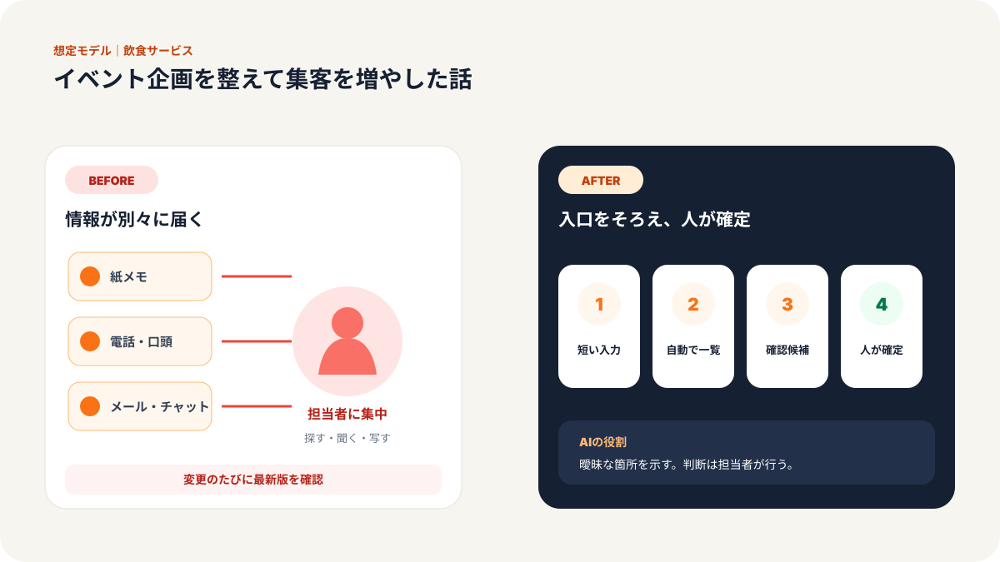
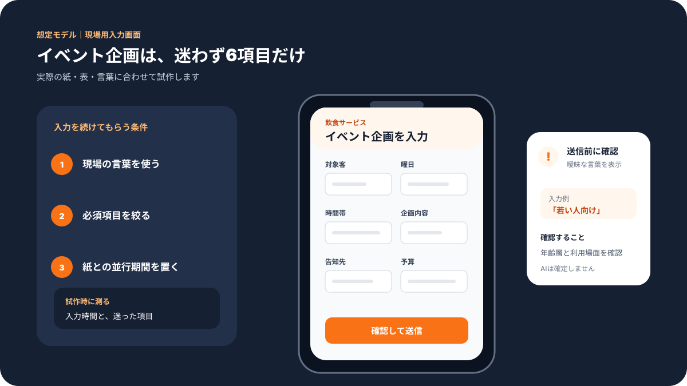
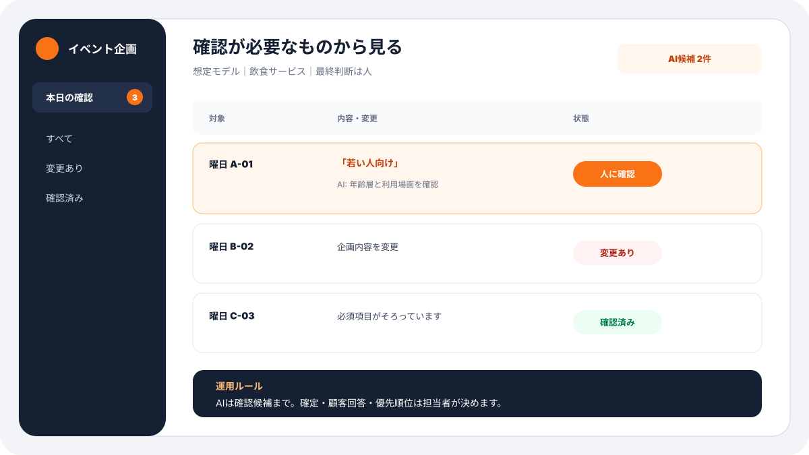
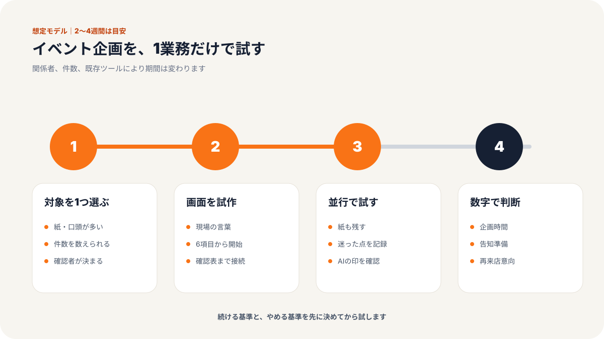
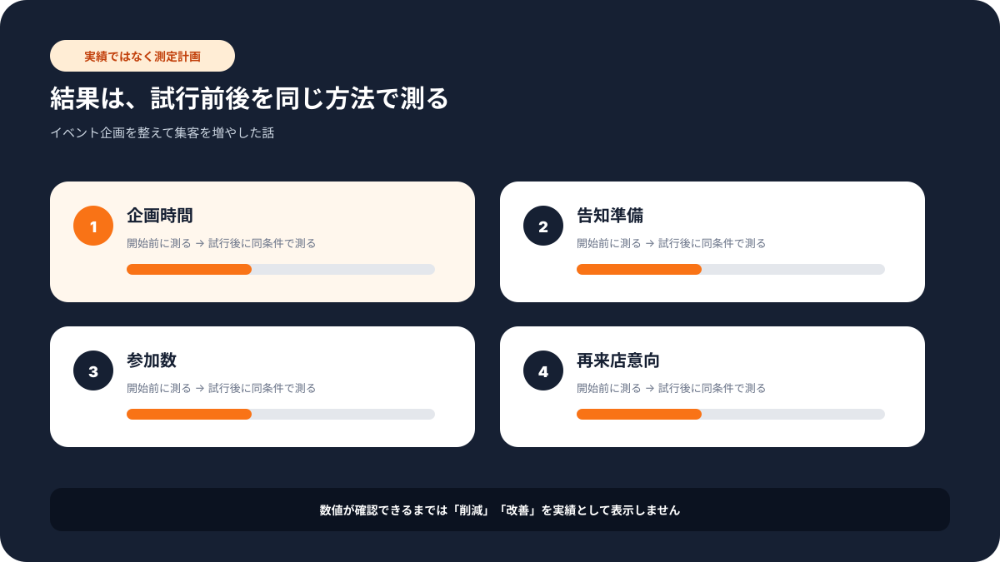

現場での使い方
この記事で変わる業務の流れ
「誰が入力し、誰が確認するか」までイメージできるよう、想定画面と導入手順をまとめています。





# 従業員16名のカラオケ店／イベント企画を整えて集客を増やした話
> 飲食・サービス業／カラオケ店／店長／従業員16名規模の事例
課題：イベント企画が店長のひらめき頼みになっていた
東北地方のカラオケ店では、平日の空室と季節ごとの集客が課題になっていました。
週末はある程度お客様が入ります。しかし、平日の夕方や長期休暇明けは波が大きく、店長が毎回イベントを考えていました。
学生向けの割引、会社員向けの飲み放題、ファミリー向けの昼イベント、シニア向けの歌会。アイデアは出ますが、どれが当たりやすいかは店長の経験に頼っていました。
店長はこう話していました。
「企画を考える時間より、外した時の理由が分からないのがつらいです」
過去に何を実施したかは、紙のメモ、予約表、SNS投稿、スタッフの記憶に分かれていました。
そのため、翌月の企画会議では同じ話が繰り返されます。
- 去年の同じ時期に何をしたか分からない
- どの客層に反応があったか記録が薄い
- SNS投稿と実際の来店数がつながっていない
- スタッフごとにおすすめイベントの感覚が違う
- 企画書作成に毎週6時間ほどかかる
企画は楽しい仕事のはずですが、忙しい店舗運営の中では負担になっていました。
施策：過去の企画、客層、季節要因を一つにまとめた
弊社では、いきなり大きな集客システムを作るのではなく、まず企画の材料を整理しました。
何を見れば次の企画を決められるのか。その材料がどこに散らばっているのか。そこから確認しました。
ステップ1：過去イベントの記録をそろえる
最初に、過去半年分のイベントを一覧にしました。
イベント名、対象客層、実施曜日、時間帯、割引内容、SNS投稿日、予約数、当日来店数、スタッフのメモ。
全部を完璧に集めるのではなく、残っている情報から始めました。
店長には「次の企画で使うための材料箱を作ります」と説明しました。
ステップ2：客層ごとの反応を見えるようにする
次に、学生、会社員、ファミリー、シニア、二次会利用など、主な客層ごとに反応を分けました。
予約時や会計時に分かる範囲で、どの企画がどの客層に合っていたかを整理します。
ここでは、細かすぎる分析は避けました。
現場で使えることが大事です。
「学生向けは金曜夜より水曜夕方の方が反応が良い」
「ファミリー向けは雨の日の昼に伸びやすい」
「会社員向けは月末より月初の方が予約につながりやすい」
このような気づきを残せるようにしました。
ステップ3：AIに企画案のたたき台を作らせる
材料がそろった後で、AIを使いました。
AIには、過去の企画、季節、客層、曜日、近隣イベントの情報を渡し、企画案のたたき台を作らせます。
ただし、AIが出した企画をそのまま採用するわけではありません。
店長とスタッフが見て、実施できるものだけを選びます。
AIの役割は、最終判断ではなく、考える材料を増やすことです。
店長は「ゼロから考えなくていいだけで、かなり楽です」と話していました。
成果：企画時間が短くなり、集客の振り返りができるようになった
導入から数週間で、まず企画会議が変わりました。
以前は、店長が考えた案をスタッフに共有する形でした。導入後は、過去の反応を見ながら一緒に選ぶ形になりました。
スタッフからも「この客層ならこの時間帯が良さそう」と意見が出やすくなりました。
数字では、次の変化がありました。
| 項目 | Before | After | 変化 |
|------|--------|-------|------|
| イベント企画時間 | 週6時間 | 週2時間 | 約67%短縮 |
| 企画成功率 | 60% | 85% | 25ポイント改善 |
| 月間イベント集客 | 300名 | 420名 | 約40%向上 |
| 企画振り返り | 店長の記憶中心 | 記録を見て確認 | 属人化を軽減 |
| スタッフ参加 | 受け身 | 提案が増加 | 店舗運営の改善 |
一番大きかったのは、外れた企画も学びとして残るようになったことです。
以前は、うまくいかなかったイベントは「今回はだめだった」で終わっていました。
今は、曜日が悪かったのか、対象客層がずれていたのか、SNS告知が遅かったのかを確認できます。
失敗が次の材料になりました。
なぜ効果が出たか：店長の経験を、スタッフも使える形にしたから
今回のポイントは、AIが奇抜な企画を出したことではありません。
店長の頭の中にあった経験を、スタッフも見られる形にしたことです。
店舗集客では、経験がとても大事です。
この地域では何が響くか。学生はいつ動くか。会社員はどの時間帯に来やすいか。雨の日はどう変わるか。
こうした知識は、長く働いている人ほど持っています。
しかし、記録されていないと引き継げません。
AIは、記録された情報をもとにたたき台を作れます。逆に言えば、記録がなければ一般的な案しか出ません。
だから、最初にやるべきことは、AI導入ではなく、企画の材料をためることでした。
他の店舗でも応用できること
この考え方は、カラオケ店だけでなく、地域店舗全般で使えます。
- 飲食店：曜日別キャンペーンと客単価の振り返り
- 美容室：季節メニューと予約導線の整理
- 学習塾：体験会と入会率の比較
- フィットネス：イベント参加と継続率の確認
- 小売店：SNS告知と来店数の関係整理
どの業種でも、店長や担当者の経験だけに頼ると、改善が残りにくくなります。
過去の企画を表にする。反応を記録する。次の企画案をAIに出させる。人が選んで実施する。
この流れであれば、無理なく始められます。
導入時に気をつけたこと：AI企画をそのまま採用しない
店舗集客でAIを使う時に注意したいのは、AIが出した企画案をそのまま実施しないことです。
AIは、過去の情報や季節要因をもとに案を広げるのは得意です。しかし、実際にその日にスタッフが足りるか、常連のお客様に合うか、地域の空気に合うかまでは、店長やスタッフの感覚が必要です。
この店舗では、AIが出した案を「採用」「保留」「今は難しい」の3つに分けるようにしました。
採用しなかった案も捨てません。なぜ難しいのかを一言だけ残します。
たとえば「学生向けだが試験期間と重なる」「スタッフが少ない曜日には向かない」「常連層と合わない」などです。
この記録が次回の企画精度を上げます。AIに任せるのではなく、AIと店長の判断を組み合わせる。この形にしたことで、現場に無理なく定着しました。
まとめ：集客改善は、派手な企画より振り返りから始まる
今回のカラオケ店では、AIで集客を一気に自動化したわけではありません。
まず、過去のイベントと反応を整理しました。そのうえで、AIに企画案のたたき台を作らせ、店長とスタッフが選べるようにしました。
結果として、企画時間は週6時間から2時間へ短縮し、月間イベント集客は300名から420名へ増えました。
店長は最後にこう話していました。
「企画が当たった理由も、外れた理由も、次に残せるようになりました」
店舗のAI活用は、難しい分析から始める必要はありません。
まず、日々の企画と反応を残すこと。そこから十分に変わります。
---
気になる業務があれば、お気軽にお声がけください。
弊社では中小企業のAI活用・システム開発の伴走支援を行っています。